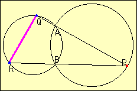

Problem of Two Circles(4)
Problem
Two circles intersect at point A and B. Point P is on one circle, and Point Q and R are on the other. Line PQ goes through point A, and line PR goes through point B.
When point P moves on the circle, what do you find about QR?
Reference

Applet